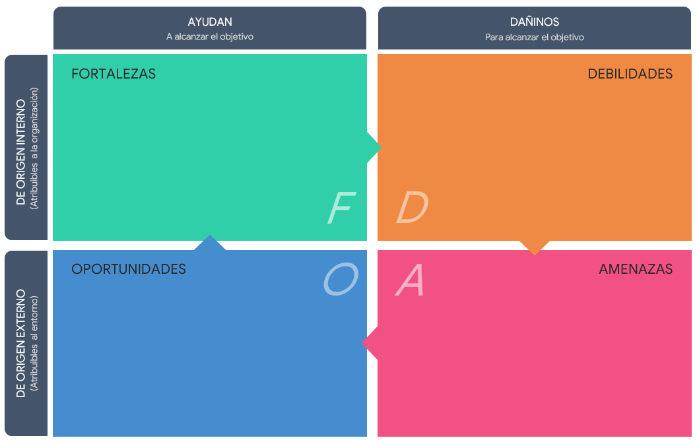
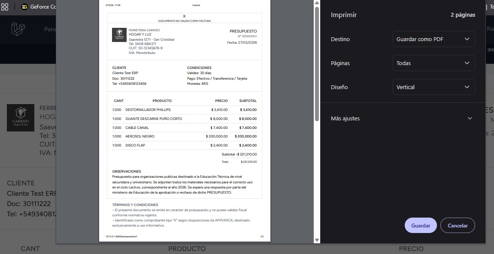
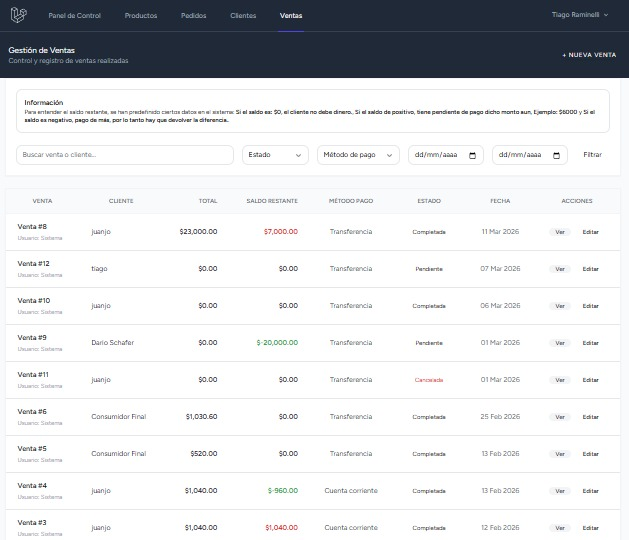
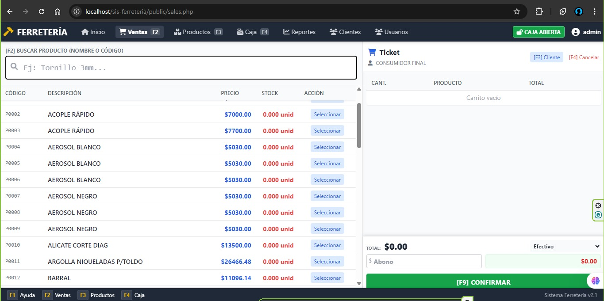

P
Político
Políticas de gobierno, subvenciones, política fiscal, tratados comerciales y cambios de partidos.
Consultoría tecnológica y administrativa orientada a la modernización digital de pequeñas y medianas empresas del interior del país.
El punto de partida de todo análisis organizacional.
La estrategia es el plan de acción que integra los objetivos principales de una organización, sus políticas y sus secuencias de acción en un todo coherente. No se trata solo de lo que la empresa quiere lograr, sino de cómo planea hacerlo frente a su competencia y su entorno.
Una buena estrategia define la dirección a seguir, asigna recursos de forma eficiente y crea una ventaja competitiva sostenible en el tiempo. Es el puente entre el diagnóstico (dónde estamos) y la acción (a dónde queremos ir).
El análisis FODA, el PESTEL y el CAME son herramientas que permiten construir, evaluar y ajustar la estrategia de una organización.
La consultora no compite por precio, sino por valor agregado. Ofrece un servicio integral (diagnóstico + desarrollo + capacitación + soporte) que permite al cliente delegar sus problemas tecnológicos y administrativos en un solo proveedor de confianza.
Herramienta de diagnóstico estratégico para evaluar la situación actual de una organización o persona.
El análisis FODA (o DAFO / SWOT) es una herramienta clave para hacer un análisis pormenorizado de la situación actual de una organización o persona, basado en sus Debilidades, Fortalezas, Oportunidades y Amenazas.
Es también una metodología de trabajo que facilita la toma de decisiones. Fue creada por Albert S. Humphrey en la Universidad de Stanford (EEUU) en los años sesenta y sigue plenamente vigente.
Su forma visual es una matriz de cuatro cuadrantes: factores internos (Fortalezas y Debilidades) y externos (Oportunidades y Amenazas).
Del análisis del entorno a la definición de acciones concretas, siguiendo el proceso estructurado del temario.

Variables políticas, económicas, sociales, tecnológicas, ecológicas y legales que afectan a la organización.
Políticas de gobierno, subvenciones, política fiscal, tratados comerciales y cambios de partidos.
Ciclos económicos, inflación, niveles de ingreso, tasa de desocupación y política económica.
Estructura de edades, familia, cambios geográficos, diversidad y población más preparada.
Realidad virtual y aumentada, impresión 3D, IoT, vehículos autónomos e inteligencia artificial.
Escasez de materias primas, contaminación, leyes ambientales, regulación energética y conciencia social.
Leyes de empleo, propiedad intelectual, salud y seguridad laboral, sectores regulados, certificaciones y privacidad.
Presencia digital de los competidores directos en el mercado local y regional.
Consultora y desarrolladora. Soluciones tecnológicas integrales.
Servicios de soporte técnico y mantenimiento informático.
Desarrollador independiente.
Desarrollador y colaborador técnico.
Desarrollador de software.
Desarrollador y creador de soluciones.
Ubicación geográfica del mercado objetivo inicial para RAMNELLI: cobertura regional enfocada en la digitalización y consultoría IT para PyMEs de San Cristóbal y zona de influencia.
Factores internos (Fortalezas y Debilidades) y externos (Oportunidades y Amenazas) identificados para la consultora.
Se asigna una puntuación del 0 al 4 a cada factor según el grado de intensidad con el que se presenta. Esto ayuda a eliminar aquellos con menor intensidad (0 y 1) y centrarse en los más importantes.
| Factor | Tipo | Intensidad |
|---|---|---|
| Diagnóstico previo y acompañamiento | Fortaleza | 4 |
| Retener los mantenimientos | Fortaleza | 4 |
| Baja digitalización de PyMEs | Oportunidad | 4 |
| Poder de negociación de clientes | Amenaza | 4 |
| Marca nueva y sin cartera | Debilidad | 3 |
| Competidores locales consolidados | Amenaza | 3 |
Corregir debilidades, Afrontar amenazas, Mantener fortalezas y Explotar oportunidades.
El análisis CAME es fundamental para saber cómo actuar ante las Debilidades, Fortalezas, Oportunidades y Amenazas identificadas. Antes de definir y priorizar acciones es clave entender cuál es la estrategia de la empresa.
Buscan evitar que empeore la situación actual. Ej: Coca-Cola en mercados maduros.
Buscan mejorar la situación actual. Ej: empresa en sector en crecimiento.
Buscan transformar la situación. Ej: IBM pasando de hardware a software.
Buscan eliminar los aspectos negativos. Ej: estudio de arquitectura tras la burbuja.
Organizar la carga de trabajo, documentar procesos, construir un portfolio y comenzar con proyectos de alcance controlado.
Diferenciarse por el diagnóstico y el acompañamiento, establecer anticipos y acuerdos claros, actualizar tarifas por inflacion y diversificar clientes.
Conservar la atención personalizada, integrar conocimientos administrativos y tecnológicos y priorizar la calidad de las soluciones.
Contactar comercios y PyMEs, ofrecer diagnósticos iniciales, implementar herramientas cloud, ampliar el alcance mediante servicios remotos.
La estrategia de campo: ir al territorio, generar confianza y dejar que el boca en boca haga el resto.
El modelo de negocio se sostiene sobre tres pilares: el trato cara a cara para captar clientes, el cobro por adelantado para asegurar liquidez y la comunicación constante para generar confianza. Un cliente bien atendido y sorprendido con el resultado se convierte en el mejor vendedor de la consultora.
Algunos de los proyectos, sistemas y soluciones desarrolladas.

Desarrollo web a medida para control de stock, gestión de clientes y seguimiento de transacciones comerciales.

Interfaz optimizada para la administración de inventario, cálculo de márgenes de ganancia y control de precios de proveedores.

Generación de comprobantes, presupuestos comerciales y adaptación a normativas vigentes (AFIP/ARCA).